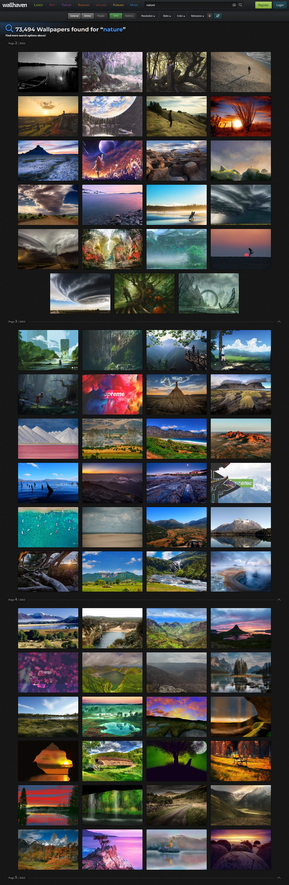
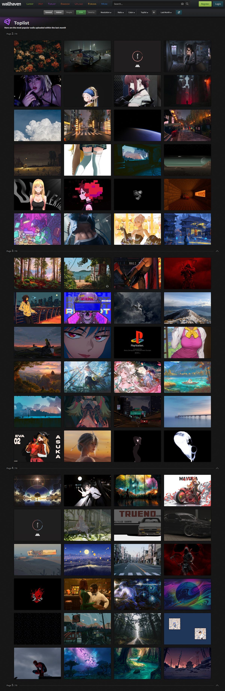
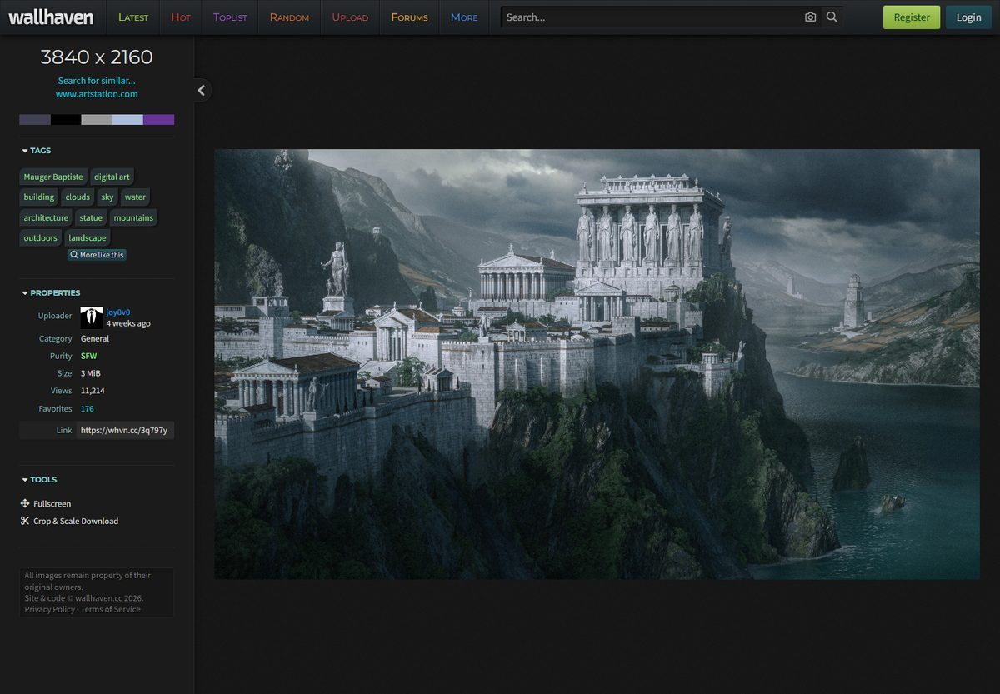

Wallhaven 隐藏功能深挖：搜壁纸十年才发现的 5 个冷门玩法
每天被无数人刷的壁纸站，除了「搜一下、存一下」，其实还藏着搜索操作符、六类过滤位码、随机翻页去重、密钥双传法，以及一个官方都不承认存在的安卓客户端。
你以为 Wallhaven 就是个搜壁纸的网站？输个关键词、点两下、右键另存——十年老用户大概率也没翻过这层表皮。我把它的公开 API 翻了个底朝天，还参考了一份wallhaven文档，比官方站的说明细得多。再加上社区里藏着的安卓客户端一起摸了一遍，发现了五个官方文档写了但几乎没人照着玩的冷门功能。每一个都够你从「搜壁纸」进化到「用壁纸」。

搜索框里能写操作符，不是只有关键词
最容易被忽略的功能：Wallhaven 的搜索框不是普通的文本匹配，它兼容一套简洁的操作符语法。wallhaven官网搜索框和 API 的 q 参数走同一套逻辑，网页上的高级筛选面板只是它的子集。
常用的几个：q=-city 排除包含 city 的结果，q=+space +minimal 强制同时包含两个词，q=@用户名 直接搜某个上传者的全部作品。但真正好用的是三个精确匹配操作符——q=id:12345 按壁纸 ID 精确查一张、q=type:png 按文件类型过滤、q=like:壁纸ID 找相似图。
举个例子，你看到一张不错的 4K 极简风景，想找同款风格但不想一个个刷：直接 q=like:那张图的ID，Wallhaven 会按颜色和构图推一批近似的。这比翻标签页高效太多。
这里埋了一个坑：id: 精确标签不能跟别的操作符混用，混用直接无效。官方没说为啥，实测就是这样——想精确查一张就只写 id:，别再加别的。
六个位码组合，一次筛出你要的纯度和类型
搜索接口有两组看似枯燥的三位数参数：categories 和 purity。前者三位对应 General / Anime / People，后者三位对应 SFW / Sketchy / NSFW。每一位是 1 开 0 关，可自由组合。
多数人用默认的 111（全开），但当你只想要动漫壁纸、完全不想看到真人摄影时，categories=010 一键切换。反过来，找摄影大片时用 categories=100 把动漫排除掉。purity 的组合更细——110 是 SFW + Sketchy（半擦边），111 全开时必须带 API 密钥，否则游客身份按纯 SFW 执行。
这组参数在网页版的「高级搜索」里有复选框，但 API 里可以直接拼到 URL。对做壁纸轮换脚本的人来说，这比网页操作方便十倍——一条 GET 请求就能精准拿到你要的图池。

随机排序的 seed 参数，翻一辈子都能去重
Wallhaven 的排序里有一个 random 选项——点击后图片顺序每次刷新都不同。但 API 里随机排序有个隐藏参数 seed：六位字母数字串，同 seed 同页的结果固定。
这意味着你可以给壁纸轮换器写这样的逻辑：每次启动生成一个新 seed，然后 page=1,2,3… 顺着翻，确保一段时间内不会重复命中同一张图。官方每页固定 24 张，meta 里会告诉你总页数和当前页码，翻页逻辑直接照抄就行。
对比一下没 seed 的 random：每次请求都是独立的随机序列，你循环翻 100 页，重复率极高。有 seed 之后，同一轮内顺序确定，翻完换个 seed 就能重新洗牌。这个细节官方文档只提了一句，几乎没人留意。
密钥两种传法，工具开发别用错
Wallhaven 的 API 是免费的，但免费不等于无限制。官方写死了两个数字：每分钟 45 次限流、NSFW 内容必须带密钥。超过限流返回 429，密钥不对返回 401。
密钥有两种传递方式。第一种是查询串：?apikey=你的密钥——简单直接，但 URL 会进服务器日志，把带密钥的链接分享给别人等于把账号拱手让人。第二种是 HTTP 请求头 X-API-Key：密钥不落到 URL 里，适合工具开发。
401 错误有两种完全不同的含义。一种是「你没资格看这个」——请求了 NSFW 内容却没带密钥，补上就行。另一种是「你的密钥本身坏了」——带了无效密钥，需要去账号设置里重新生成。排查时先看 purity 参数和请求头，别上来就重试把限流撞了。

官方没出 App，但社区藏着一个安卓客户端
这个最有意思：Wallhaven 官方明确说过「没有出过 App」，但社区里一直有第三方安卓客户端在流传。它读的还是同一个公开 API，中文界面，安装包可以从wallhaven下载转到自己的网盘再取。
能搜到的版本要求安卓 5.2 以上，安装后直接进壁纸大厅，不需要注册登录。唯一跟账号有关的功能就是填 API 密钥——填了之后搜索会套用你账号的默认筛选，能看到更多内容级别。
安装有三个前置检查：系统版本够不够、存储预留几百 MB（原图 4K 的话一张就十几 MB）、给浏览器开「安装未知应用」权限。装完建议校验一下 MD5 身份，社区有专门的核对页。

踩过才知道的两个坑
最后说两个容易忽略的问题。一个是 API 限流——45 次/分钟对人来说绰绰有余，但写脚本时很容易撞线。一个「每 3 秒翻一页」的轮换工具贴着限额跑没问题，「每秒翻 10 页」必然被掐。收到 429 直接指数退避（等 30 秒再 60 秒），别立即重试火上浇油。
另一个是版权。Wallhaven 社区从 Wallbase 时代起就对版权特别敏感——官方没有广告收入，没有对抗版权方的动机，撤侵权图的优先级很高。个人收藏下载设壁纸没问题，但把图拿去商用或二次分发，权利归属看的是原作者不是这个站。上传时裁掉签名、传禁传来源是侵权纠纷的最高发区。
Wallhaven 不是只能搜搜存存的壁纸站——它更像一个接口完全公开的图片社区平台。把这五个隐藏玩法吃透，你就能从刷图的用户变成真正驾驭它的人。关于 API 参数和客户端安装的完整笔记，我顺手同步到了 GitHub、Gitee、GitCode 三个仓库，国内外不同网络环境下都能取到。